Progettare algoritmi per sistemi distribuiti significa operare senza clock condiviso, senza memoria condivisa e in presenza di guasti. Questi tre vincoli cambiano radicalmente l'approccio: non possiamo piu usare semafori o mutex come si fa nel caso concorrente classico, perche non esiste una risorsa centrale di sincronizzazione.
Idea chiave
L'unico meccanismo di coordinazione disponibile in un sistema distribuito asincrono e lo scambio di messaggi. Ogni algoritmo distribuito si riduce a decidere cosa comunicare, quando comunicarlo e come interpretare cio che si riceve.
La maggior parte degli algoritmi discussi in questo capitolo assume un sistema asincrono senza guasti (tempo di consegna finito ma non noto a priori). Solo per il consenso si introduce l'ipotesi di sincronia con timeout per gestire i fallimenti.
Sfida
Conseguenza
Soluzione negli algoritmi
Nessun clock condiviso
Impossibile ordinare eventi con tempo fisico
Clock logici e relazione happened-before
Nessuna memoria condivisa
Stato globale non osservabile direttamente
Snapshot algoritmi come Chandy-Lamport
Nessun failure detection accurato
Lento e guasto sono indistinguibili
Timeout e modelli a sincronia
Piu in dettaglio, i sistemi distribuiti presentano tre assenze fondamentali che li rendono radicalmente diversi dai sistemi concorrenti tradizionali (basati su memoria condivisa):
Assenza di un clock condiviso: non e possibile sincronizzare perfettamente gli orologi di processori diversi a causa dell'incertezza nei tempi di comunicazione. Gli orologi fisici non possono essere usati per la sincronizzazione
Assenza di memoria condivisa: nessun processore puo conoscere lo stato globale del sistema in un dato istante. E difficile osservare qualsiasi proprieta globale
Assenza di rilevamento accurato dei guasti: in un sistema asincrono (senza bound superiore sul tempo di comunicazione) non si puo distinguere tra un processore lento e uno caduto
Non esiste un limite superiore noto al tempo di consegna dei messaggi. Il ritardo puo essere arbitrario ma finito. La maggior parte degli algoritmi distribuiti assume reti asincrone in assenza di guasti. Il nondeterminismo e massimo, la concorrenza e massima. Ideali per ambienti non critici dove la probabilita di guasto e bassa.
Esiste un limite superiore noto al tempo di consegna dei messaggi e alla durata delle azioni dei processi. Si possono usare timeout per rilevare guasti. La progettazione degli algoritmi e piu semplice. Necessari quando si devono gestire guasti, ad esempio negli algoritmi di consensus o nei protocolli bizantini.
Categorie principali di algoritmi distribuiti
Il professore elenca le cinque macro-categorie che gli algoritmi distribuiti devono affrontare, tutte basate sugli orologi logici e sulla relazione happened before gia introdotta nel modulo precedente:
Ordinamento degli eventi (parziale): orologi logici di Lamport, vector clocks. Sono il fondamento usato da tutti gli altri algoritmi
Osservazione dello stato: global snapshot per catturare lo stato globale del sistema da un singolo processo
Coordinamento e accordo: mutua esclusione distribuita, elezione del leader, multicast communication con ordinamento, consensus
Transazioni distribuite e controllo della concorrenza
Replicazione e servizi fault-tolerant
Idea chiave
Tutti questi algoritmi si basano sugli orologi logici e sulla relazione happened before (→) per definire un ordinamento tra eventi correlati. Il concetto di tempo logico di Lamport (1978) e il fondamento su cui poggia l'intera architettura degli algoritmi distribuiti.
Modelli di computazione distribuita
Il professore richiama i tre modelli principali per descrivere il comportamento di un programma distribuito:
Interleaving model: assume un ordinamento totale tra gli eventi. OK per la verifica di proprieta
Happened-before model: ordine parziale, con ordine totale solo per eventi dello stesso processo. Serve per catturare il comportamento osservabile
Potential causality model: nessuna assunzione nemmeno per singoli processi multi-thread. Utile per debugging distribuito
2. Mutua esclusione distribuita: il problema
Il problema e analogo a quello della sezione critica in ambito concorrente: un insieme di processi distribuiti ha nel proprio codice una porzione di programma che puo essere eseguita da un solo processo alla volta. Nel caso concorrente useremmo un semaforo o un mutex. Nel caso distribuito dobbiamo progettare un algoritmo basato esclusivamente sullo scambio di messaggi.
Per l'esame
Le tre proprieta della sezione critica distribuita sono: safety (due processi non possono mai essere contemporaneamente in CS), liveness (ogni richiesta viene prima o poi concessa) e fairness (le richieste vengono servite secondo l'ordine della relazione happened-before).
Il professore sottolinea due approcci principali. Il primo e centralizzato: si assume un coordinatore che gestisce i permessi, soluzione piu semplice ma con un single point of failure. Il secondo e decentralizzato (Ricart-Agrawala), dove non esiste un coordinatore unico e tutti i processi collaborano in modo simmetrico.
Un processo coordinatore gestisce un token. I processi inviano richieste al coordinatore, che le accoda e assegna il token rispettando l'ordinamento causale. Piu semplice da implementare, ma il coordinatore e un collo di bottiglia e un punto unico di fallimento.
Ogni richiedente invia una richiesta timestampata agli altri processi. Chi è già in CS differisce gli OK; chi attende confronta le coppie (timestamp, ID), mentre chi è libero risponde subito. Ricart–Agrawala richiede 2(N − 1) messaggi per ingresso: N − 1 richieste e N − 1 OK.
3. Algoritmo centralizzato con coordinatore
Un coordinatore P0 gestisce un unico permesso, qui chiamato token, per N client P1…PN. Il modello assume partecipanti fissi, processi corretti, canali affidabili senza duplicati e consegna eventuale; non richiede FIFO. Ogni client ha al massimo una richiesta di acquisizione pendente e può scambiare messaggi applicativi anche mentre attende. Il token può trovarsi a P0, presso un client o in un messaggio in transito: durante il viaggio non è disponibile per una seconda concessione.
Questa variante aggiunge precedenza causale delle richieste, non garantita da una semplice coda in ordine di arrivo. Il vettore v[j] conta le richieste di Pj note al processo: si incrementa soltanto la propria componente quando si crea una nuova richiesta. Tutti i messaggi del modello trasportano una copia del vettore del mittente; alla consegna il destinatario fa il massimo componente per componente. È un vettore di contatori di richieste, non un orologio incrementato a ogni evento.
Idea chiave
Quando un processo invia una richiesta al coordinatore, include non solo la propria richiesta ma anche la conoscenza che ha delle richieste fatte dagli altri. Cosi il coordinatore puo ritardare una richiesta se sa che ce n'e un'altra in sospeso che la precede causalmente.
Strutture dati del coordinatore
Il coordinatore distingue questi dati:
reqList: richieste ricevute ma non ancora concesse, in ordine di arrivo.
granted[i]: concessioni inviate a Pi. Il vecchio nome reqDone indicava questo conteggio, non necessariamente CS completate.
completed[i]: rilasci di Pi già ricevuti da P0.
haveToken: vero solo quando il token è a P0; falso anche durante TOKEN e RELEASE in viaggio.
La richiesta w di Pi è eligible quando w.v[i] == granted[i] + 1 e, per ogni j ≠ i, w.v[j] ≤ granted[j]. P0 sceglie la prima richiesta eligible solo se haveToken è vero. Il confronto non è «w.v ≤ granted» sull'intero vettore, perché la componente del richiedente vale esattamente uno in più. Le altre componenti possono essere minori: P0 può avere già servito richieste concorrenti sconosciute al richiedente.
P1 invia REQUEST [1,0] e poi APP [1,0] a P2. Dopo aver ricevuto APP, P2 crea REQUEST [1,1]. Se [1,1] arriva per prima a P0, deve attendere la richiesta di P1. Quando [1,0] arriva, P0 concede P1; [1,1] diventa numericamente eligible ma aspetta ancora il ritorno del token. La figura mostra esplicitamente il messaggio APP che giustifica il vettore di P2.
P1 invia la richiesta [1,0], poi un messaggio applicativo APP a P2. Solo dopo aver ricevuto APP, P2 può inviare [1,1]. La rete consegna a P0 prima la richiesta di P2, che resta in coda; [1,0] arriva dopo ed è servita per prima. Gli archi seguono questo esempio, non durate misurate. Il TOKEN di P2 parte soltanto dopo il ritorno del RELEASE di P1; anche P2 deve riceverlo prima di entrare in CS.
Controesempio all'uguaglianza: P1 e P2 richiedono indipendentemente con [1,0] e [0,1]. Dopo il ciclo di P1, granted = [1,0]. La richiesta [0,1] di P2 è pronta perché 0 ≤ 1 sulla componente di P1; pretendere 0 == 1 la bloccherebbe per sempre. La precedenza causale non impone un ordine tra queste due richieste concorrenti.
Confronto con le slide: nella slide 10 di «[module-4.2] Distributed Algorithms – An Overview» compare == per gli altri client, mentre la spiegazione parla di «at most». Il controesempio sopra rende esplicita la correzione a ≤. La stessa slide incrementa reqDone all'invio del token: qui il nome granted ne chiarisce il significato, separandolo dai completamenti.
Per l'esame
La precedenza causale è distinta dall'assenza di starvation. Qui si usa la prima richiesta eligible in ordine di arrivo. Il progresso richiede che ogni messaggio arrivi, P0 continui a processare gli eventi e ogni possessore esca dalla CS e restituisca il token. Un client o coordinatore guasto può fermare il protocollo; non è prevista rigenerazione automatica del token.
Idea chiave
Il vettore allegato è una copia al momento dell'invio: non cambia quando il mittente apprende nuove richieste. REQUEST, TOKEN, RELEASE e i messaggi applicativi APP propagano tutti la conoscenza nel modello. Il coordinatore mantiene a sua volta un vettore noto, distinto dai contatori granted e completed.
Per l'esame
Un ciclo completo usa 3 messaggi di controllo: REQUEST, TOKEN, RELEASE. I primi due consentono l'ingresso; il terzo restituisce il permesso. Il piggyback del vettore aumenta la dimensione dei messaggi, non richiede di per sé messaggi ulteriori. Nell'esempio causale si aggiunge un APP esplicito per mostrare la dipendenza. P0 resta un collo di bottiglia e un punto unico di fallimento.
Il flusso completo richiesta–token–rilascio, con la chiamata a checkReq sia alla ricezione di una richiesta sia al ritorno del token, e riassunto nel diagramma seguente.
TOKEN è il permesso di P0; RELEASE è il suo ritorno. Una richiesta eligible non basta: il coordinatore deve anche possedere il token. Il client scelto può differire dall’ultimo richiedente. Quando invia TOKEN, P0 lo marca subito assente e incrementa le concessioni, non i completamenti. Il client entra solo alla ricezione, esce prima di inviare RELEASE, e P0 registra il completamento quando RELEASE arriva. Senza una richiesta eligible o il token, P0 conserva la coda e ricontrolla ai successivi arrivi; non esegue attesa attiva.
Il client esce dalla CS prima di inviare RELEASE. P0 considera il token assente dall'invio di TOKEN fino alla ricezione di RELEASE: non può concederlo nuovamente solo perché il client ha premuto «rilascia». Sono eventi su processi diversi, separati dal ritardo di rete.
Riferimento per il ciclo centralizzato e i tre messaggi: Aspnes, Distributed mutual exclusion. La politica causale con vettori è la variante didattica qui esplicitata e verificata; non è una proprietà automatica di ogni coordinatore centralizzato.
4. Pseudocodice: processo client e coordinatore
Il codice seguente mostra la struttura dell'algoritmo: ogni client tiene un vector clock v, incrementa la propria componente per ogni richiesta, e invia il vettore al coordinatore. Il coordinatore, ricevuta la richiesta, verifica l'eligibility prima di assegnare il token.
5. Simulatore: algoritmo centralizzato
Puoi creare richieste, inviare APP tra i client, consegnare messaggi in un ordine scelto e restituire il token dal suo possessore. P0 decide automaticamente alla ricezione di REQUEST o RELEASE, senza permessi inventati né una preferenza fissa per P1. Una richiesta eligible può comunque aspettare il token. Le tracce sotto mostrano due esecuzioni riproducibili.
Il simulatore richiede JavaScript. Diagrammi e tracce statiche restano disponibili senza script.
Traccia: La richiesta successiva arriva prima
Ogni riga è un'azione del client o la consegna di un messaggio. Le concessioni possono avvenire automaticamente durante una consegna a P0. I vettori hanno componenti P1, P2. Su mobile scorri la tabella orizzontalmente; con il focus nella tabella puoi usare le frecce.
La richiesta successiva arriva prima
#
Azione
Token
Concesse / completate
Coda a P0
1
P1 invia REQUEST [1,0], che resta in rete.
a P0
[0,0] / [0,0]
vuota
2
P1 invia a P2 un messaggio APP con [1,0].
a P0
[0,0] / [0,0]
vuota
3
P2 apprende la richiesta di P1 dal messaggio APP.
a P0
[0,0] / [0,0]
vuota
4
P2 invia REQUEST [1,1], causalmente successiva.
a P0
[0,0] / [0,0]
vuota
5
P0 riceve prima [1,1]: dipendenza da P1 non soddisfatta, token ancora a P0.
a P0
[0,0] / [0,0]
P2#1
6
Arriva [1,0]: P0 concede P1 e invia TOKEN; non è ancora un ingresso in CS.
in viaggio P0 → P1
[1,0] / [0,0]
P2#1
7
P1 riceve TOKEN ed entra in CS.
a P1 (in CS)
[1,0] / [0,0]
P2#1
8
P1 esce e invia RELEASE. Il token è in viaggio verso P0.
in viaggio P1 → P0
[1,0] / [0,0]
P2#1
9
P0 riceve RELEASE: completa P1 e concede P2, inviando TOKEN.
in viaggio P0 → P2
[1,1] / [1,0]
vuota
10
P2 riceve TOKEN ed entra in CS.
a P2 (in CS)
[1,1] / [1,0]
vuota
11
P2 esce e restituisce il token.
in viaggio P2 → P0
[1,1] / [1,0]
vuota
12
P0 riceve RELEASE: entrambe le richieste sono completate.
a P0
[1,1] / [1,1]
vuota
Traccia: Richieste concorrenti: perché serve ≤
Ogni riga è un'azione del client o la consegna di un messaggio. Le concessioni possono avvenire automaticamente durante una consegna a P0. I vettori hanno componenti P1, P2. Su mobile scorri la tabella orizzontalmente; con il focus nella tabella puoi usare le frecce.
Richieste concorrenti: perché serve ≤
#
Azione
Token
Concesse / completate
Coda a P0
1
P1 invia REQUEST [1,0].
a P0
[0,0] / [0,0]
vuota
2
P2 invia REQUEST [0,1] senza conoscere P1.
a P0
[0,0] / [0,0]
vuota
3
P0 concede P1 e invia TOKEN.
in viaggio P0 → P1
[1,0] / [0,0]
vuota
4
P0 accoda [0,1]: è eligible, ma il token è già in viaggio verso P1.
in viaggio P0 → P1
[1,0] / [0,0]
P2#1
5
P1 riceve TOKEN ed entra in CS.
a P1 (in CS)
[1,0] / [0,0]
P2#1
6
P1 esce e invia RELEASE.
in viaggio P1 → P0
[1,0] / [0,0]
P2#1
7
P0 riacquisisce il token: 0 ≤ 1 permette di concedere P2; 0 == 1 lo bloccherebbe.
in viaggio P0 → P2
[1,1] / [1,0]
vuota
8
P2 riceve TOKEN ed entra in CS.
a P2 (in CS)
[1,1] / [1,0]
vuota
9
P2 esce e invia RELEASE.
in viaggio P2 → P0
[1,1] / [1,0]
vuota
10
Il token torna a P0: due cicli completi, sei messaggi di controllo.
a P0
[1,1] / [1,1]
vuota
6. Algoritmo decentralizzato: Ricart-Agrawala
Ricart–Agrawala (1981) non richiede un coordinatore. Ogni richiedente invia agli altri processi una richiesta ordinata dalla coppia (timestamp logico, ID del processo): l'ID risolve le parità. Il protocollo base assume processi corretti e consegna affidabile dei messaggi; un partecipante guasto può impedire di raccogliere tutti i permessi.
Un processo ottiene il permesso di entrare in CS quando ha ricevuto OK da tutti gli N-1 processi. Quando esce dalla CS, invia OK a tutti i processi nella propria coda di attesa.
Il numero di messaggi per richiesta e 2(N-1): (N-1) richieste inviate + (N-1) OK ricevuti. L'algoritmo funziona anche con canali non FIFO.
Nota del redattore
Il costo è 2(N − 1) messaggi per ingresso. L'ottimalità vale nel modello di controllo distribuito, simmetrico e concorrente considerato nell'articolo originale, non rispetto a qualsiasi protocollo o infrastruttura.
Il richiedente usa la coppia (timestamp, ID) per ordinare totalmente le richieste. Attende un OK da ciascuno degli altri N − 1 processi; soltanto dopo entra in sezione critica. In uscita risponde alle richieste differite. Il trattamento delle richieste ricevute è descritto nel protocollo sottostante.
Protocollo
Richiesta: aggiorna l'orologio logico, memorizza req = (timestamp, i), imposta REQUESTING, azzera i permessi e invia REQUEST agli altri N − 1 processi.
Ricezione REQUEST: aggiorna l'orologio. Rispondi subito se RELEASED, oppure se REQUESTING e la richiesta ricevuta precede la tua. Se HELD, o se la tua richiesta ha priorità, differisci la risposta in pendingQ.
Ricezione OK: registra il mittente. Dopo N − 1 permessi distinti, imposta HELD ed entra in CS.
Rilascio: imposta RELEASED, invia OK a tutti i richiedenti differiti e svuota pendingQ.
È un esempio di come un timestamp logico possa fungere da «biglietto numerato» per determinare l'ordine di accesso a una risorsa condivisa senza un'autorità centrale.
Idea chiave
Decentralizzare non significa rendere il protocollo tollerante ai guasti: nel protocollo base l'assenza dell'OK di un solo partecipante può bloccare l'ingresso.
7. Pseudocodice Ricart-Agrawala
Ogni processo mantiene uno stato RELEASED, REQUESTING o HELD, un orologio logico, la propria richiesta (timestamp, ID), l'insieme dei permessi ricevuti e le risposte differite. Il confronto fra richieste è lessicografico. Gli eventi di invio e ricezione aggiornano l'orologio logico secondo le regole di Lamport.
8. Ricart-Agrawala in azione: due simulatori
Il primo simulatore ripercorre l'algoritmo su 3 processi, evidenziando le condizioni di risposta:
Per richiedere la CS, un processo Pi assegna il timestamp alla propria richiesta e la invia a tutti gli altri processi. Nella traccia guidata, myts = inf indica RELEASED.
Alla ricezione di una richiesta da Pj, un processo Pi risponde con OK se:
non e interessato a entrare in CS (myts == infinity), oppure
sta attendendo la CS e la propria coppia (timestamp, ID) è maggiore di quella ricevuta.
Se è già in CS, o la sua richiesta ha priorità, accoda la risposta a Pj nella propria pendingQ.
Un processo ottiene la CS quando ha ricevuto OK da tutti gli altri processi.
Nel rilasciare la CS, invia OK a tutti i processi in pendingQ e resetta myts a infinity.
Premi "Passo successivo" per eseguire Ricart-Agrawala con 3 processi passo-passo.
La fairness e assicurata dalla relazione d'ordine sui timestamp (a parita di timestamp, vince il PID piu basso).
Nel secondo simulatore puoi generare richieste e scegliere quale messaggio in transito consegnare. Prova a far richiedere P1 e P3 prima di consegnare messaggi: i timestamp iniziali coincidono e l'ID risolve la parità a favore di P1. P3 gli concede l'OK; P1 differisce la risposta a P3 fino al proprio rilascio. Ritardare indefinitamente un messaggio può impedire il progresso: il modello non scambia un timeout per un permesso.
9. Leader election: Chang-Roberts
La leader election sceglie un coordinatore comune. Chang–Roberts elegge il PID massimo su un anello logico unidirezionale con identificatori unici. Qui consideriamo una sola elezione, partecipanti fissi, nessun guasto e canali affidabili FIFO, con consegna eventuale e senza duplicati. L'algoritmo non rileva i guasti e non ripara da solo un anello interrotto: dopo un crash, la riconfigurazione dell'anello è un problema separato.
Il funzionamento e il seguente:
Un processo non ancora partecipe può iniziare: imposta awake = true e invia election(myid) al successore. Più processi possono iniziare prima di apprendere altre candidature.
Alla ricezione di election(j): se j > myid, inoltra j e diventa partecipe; se j < myid e non è ancora partecipe, sostituisce j con il proprio PID e diventa partecipe; se è già partecipe, scarta il PID minore.
Se j == myid, la propria candidatura ha completato il giro: il processo registra se stesso come leader e invia leader(myid). Non basta aver visto un PID grande: serve il ritorno al suo originatore.
Ogni altro processo registra e inoltra leader(j); il leader arresta l'annuncio quando gli ritorna. Non si avviano nuove elezioni nello stesso esperimento.
Con un solo iniziatore spontaneo e nessun ulteriore avvio, servono al massimo N − 1 trasmissioni per raggiungere il PID massimo, N per far tornare la sua candidatura e N per l'annuncio: al massimo 3N − 1. Con iniziatori concorrenti il caso peggiore è invece Θ(N²) messaggi election, più N messaggi leader. Per esempio, se tutti iniziano su un anello di PID decrescenti, le candidature percorrono complessivamente 1 + 2 + … + N = N(N + 1)/2 archi. Questi sono conteggi di trasmissioni, non limiti temporali in una rete asincrona.
L'anello è una sovrapposizione logica (superimposing): ogni processo conosce il proprio successore. La rete fisica non deve necessariamente avere forma ad anello, ma deve consentire queste comunicazioni.
Alla ricezione di leader(j), un processo apprende il risultato localmente. Solo al ritorno dell'annuncio il leader sa che il messaggio ha visitato l'intero anello. La semplicità della regola di elezione non elimina il costo di mantenere la topologia e gestire i guasti.
awake significa «ha già partecipato», non «ha necessariamente inviato il proprio PID». Anche inoltrare una candidatura maggiore rende partecipe il processo: non deve poi candidarsi di nuovo alla ricezione di un PID minore.
Le frecce sono canali verso il successore: P1 → P2 → P3 → P4 → P1. Non sono una cronologia dei messaggi. Il PID massimo diventa leader soltanto quando riceve indietro la propria candidatura; poi avvia un giro distinto di annuncio.
Un esempio con PID non ordinati sull'anello: P2 avvia l'elezione, il suo messaggio viene rimpiazzato da quello di P7 (l'ID massimo), che fa il giro completo e torna al mittente.
Anello P2 → P7 → P3 → P1 → P5 → P4 → P2. Il primo invio è P2 → P7: election(2). P7 sostituisce 2 con 7; election(7) percorre P7 → P3 → P1 → P5 → P4 → P2 → P7. Solo dopo questo ritorno P7 invia leader(7) lungo lo stesso giro completo. Totale: 7 election + 6 leader = 13 trasmissioni. Le frecce tra i riquadri ordinano le fasi, non rappresentano collegamenti di rete.
Idea chiave
L'algoritmo usa l'anello logico solo per il controllo dell'elezione, non per il flusso dei dati applicativi. E un esempio classico di superimposing: sovrapporre un protocollo di coordinamento a una topologia fisica arbitraria. Questo pattern si ritrova in molti algoritmi distribuiti.
10. Esplora: messaggi di Chang-Roberts
Avvia da P2 per riprodurre le 13 trasmissioni dell'esempio. Poi reimposta e prova «Tutti insieme»: più candidature percorrono contemporaneamente l'anello. I contatori distinguono invii e ricezioni; ogni inoltro è una nuova trasmissione. Il simulatore permette solo eventi ammessi dal protocollo.
La simulazione richiede JavaScript. La figura e la traccia completa qui sotto restano leggibili senza script.
Ogni riga è una trasmissione consegnata; gli invii successivi derivano dall'effetto al ricevente. La riga 7 è il ritorno della candidatura, la riga 8 è il primo annuncio. Non sono messaggi simultanei.
Su schermi stretti, scorri la tabella orizzontalmente per leggere gli effetti; con la tastiera usa le frecce quando la tabella ha il focus.
Sostituisce il PID minore con il proprio; partecipa.
2
P7 → P3
election(7)
Inoltra il PID maggiore; partecipa senza candidarsi.
3
P3 → P1
election(7)
Inoltra il PID maggiore; partecipa senza candidarsi.
4
P1 → P5
election(7)
Inoltra il PID maggiore; partecipa senza candidarsi.
5
P5 → P4
election(7)
Inoltra il PID maggiore; partecipa senza candidarsi.
6
P4 → P2
election(7)
Inoltra il PID maggiore; partecipa senza candidarsi.
7
P2 → P7
election(7)
Candidatura tornata: si elegge e avvia l’annuncio.
8
P7 → P3
leader(7)
Registra il leader e inoltra l’annuncio.
9
P3 → P1
leader(7)
Registra il leader e inoltra l’annuncio.
10
P1 → P5
leader(7)
Registra il leader e inoltra l’annuncio.
11
P5 → P4
leader(7)
Registra il leader e inoltra l’annuncio.
12
P4 → P2
leader(7)
Registra il leader e inoltra l’annuncio.
13
P2 → P7
leader(7)
Annuncio tornato al leader: tutti informati.
Lo pseudocodice dell'algoritmo e mostrato qui sotto. Ogni processo mantiene awake (se ha gia partecipato all'elezione) e leaderId (una volta eletto).
11. Message ordering: ordinamento causale
Asincrono non significa «senza causalità»: significa che non assumiamo limiti noti ai ritardi. Distinguiamo arrivo dalla rete al middleware e consegna all'applicazione. L'ordinamento causale richiede: se send(m1) → send(m2), allora deliverᵢ(m1) → deliverᵢ(m2) presso ogni destinatario comune Pi. Il middleware può ritardare la consegna per rispettare il vincolo, senza cambiare l'ordine fisico degli arrivi.
Per l'esame
FIFO preserva l'ordine degli invii da uno stesso mittente a uno stesso destinatario. L'ordine causale comprende questo caso, ma considera anche catene di dipendenza attraverso processi diversi. Gli invii concorrenti non ricevono un ordine reciproco obbligatorio.
P1 invia m1 a P3, poi m2 a P2. Dopo la consegna di m2, P2 invia m3 a P3. m1 e m3 hanno P3 come destinatario comune e i loro invii sono causalmente ordinati. m3 può comunque arrivare a P3 prima di m1: è la sua consegna prematura all'applicazione, non l'arrivo nel buffer, che violerebbe l'ordinamento causale.
Ogni nodo è un evento applicativo, non un processo intero. Gli archi m1, m2 e m3 collegano ciascun invio alla relativa consegna; gli altri archi continui indicano ordine locale. La catena send(m1) → send(m2) → deliver₂(m2) → send(m3) impone deliver₃(m1) prima di deliver₃(m3). L’arco tratteggiato è questo vincolo, non un quarto messaggio. Non sono rappresentati i tempi di arrivo al middleware.
La catena completa è send(m1) → send(m2) → deliver₂(m2) → send(m3). Quindi P3 deve consegnare m1 prima di m3. P3 non deve ricevere m2, che è destinato a P2: è sufficiente che m3 trasporti la conoscenza della dipendenza.
Il middleware accoda un messaggio non ancora eligible. La matrice locale incorpora il suo timestamp solo alla consegna applicativa, non all'arrivo: incorporarlo in anticipo farebbe apparire soddisfatte dipendenze ancora pendenti. Dopo ogni consegna si ricontrolla il buffer fino a quando non contiene più messaggi eligible.
Stesso esempio della figura precedente: m1 va da P1 a P3; m2 da P1 a P2; dopo la consegna di m2, P2 invia m3 a P3. Qui le frecce seguono il lavoro del middleware di P3, non nuovi invii. Il vettore mostrato è la sola colonna destinata a P3, nelle righe P1, P2, P3; ogni messaggio trasporta l’intera matrice. m1 compare una sola volta come arrivo e sblocca m3 senza che m3 debba arrivare di nuovo.
12. Algoritmo con matrice di clock
Consideriamo comunicazioni punto-punto tra processi distinti, con partecipanti fissi, nessun guasto e canali affidabili senza duplicati, ma non necessariamente FIFO. Ogni Pi conserva una matrice di contatori Mᵢ di dimensione N×N: Mᵢ[j,k] conta gli invii da Pj a Pk conosciuti attraverso gli eventi applicativi di Pi. Non è un orologio di tempo fisico. Nella notazione del codice m è Mᵢ e m' è il timestamp T del messaggio.
Quando un processo Pi invia un messaggio a Pj:
Incrementa m[i,j] di 1
Allega l'intera matrice m al messaggio (piggyback)
Quando a Pi arriva un messaggio da Pj con matrice m':
Il messaggio è eligible se per ogni k ≠ j: m'[k,i] ≤ m[k,i], e per il mittente j: m'[j,i] == m[j,i] + 1. Le dipendenze dagli altri mittenti devono essere già soddisfatte; da j deve arrivare il prossimo numero atteso.
Se non e eligible, il messaggio viene bufferizzato fino a quando non lo diventa.
Se è eligible, Pi aggiorna m con il massimo componente per componente di m e m', consegna il messaggio e ricontrolla il buffer. L'aggiornamento e la consegna sono un unico passo locale del modello.
Perché ≤, non ==
Il destinatario può avere già consegnato messaggi concorrenti che il mittente non conosce. Se P3 ha consegnato un messaggio da P1, M₃[1,3] = 1; un messaggio concorrente da P2 può avere T[1,3] = 0. La dipendenza è soddisfatta perché 0 ≤ 1. Pretendere 0 == 1 bloccherebbe quel messaggio per sempre, dato che i contatori non diminuiscono.
Attenzione alla posizione del collegamento P1→P2: se P1 lo invia prima del proprio messaggio a P3, esso non trasmette conoscenza di quell'invio successivo. Senza altre dipendenze, i due invii a P3 restano concorrenti. La semplice posizione delle frecce sulla pagina non crea causalità.
Confronto: Kshemkalyani e Singhal, slide 4–5 e 24. La presentazione RST della slide 24 usa canali FIFO, contatori di consegna separati e timestamp prima dell'incremento. Qui l'incremento avviene prima dell'invio; il test «prossimo numero» gestisce anche arrivi non FIFO. Non mescolare le due convenzioni.
Riassumendo la condizione di eleggibilità per un messaggio ricevuto da Pi da Pj con matrice m':
∀ k ≠ j: m'[k,i] ≤ m[k,i] (le dipendenze verso Pi dagli altri mittenti sono già state consegnate; Pi può conoscere messaggi ulteriori)
m'[j,i] == m[j,i] + 1 (questo è il prossimo messaggio atteso da j)
La colonna i di Mᵢ conta i messaggi già consegnati a Pi, mentre le altre colonne conservano conoscenza su invii ad altri destinatari. Questa proprietà è mantenuta dal controllo prima del massimo componente per componente. Il vincolo di ordine riguarda i destinatari comuni, non tutti i processi indistintamente.
Esplora arrivo, buffer e consegna
Gli esempi interattivi richiedono JavaScript. Le tracce qui sotto restano disponibili senza script.
Traccia: Sorpasso causale: m3 aspetta m1
Una riga per invio o arrivo dalla rete. Le consegne possono essere zero, una o più; il vettore è la colonna di P3 dopo il passo, nell'ordine dei mittenti P1, P2, P3. Su schermi stretti scorri orizzontalmente; usa le frecce dopo aver dato il focus alla tabella.
Sorpasso causale: m3 aspetta m1 · modello punto-punto senza guasti
#
Azione
Consegne nel passo
M₃[*,3]
Buffer P3
1
P1 invia m1 a P3.
nessuna
[0,0,0]
vuoto
2
P1 invia m2 a P2, dopo m1.
nessuna
[0,0,0]
vuoto
3
m2 arriva a P2 e viene consegnato.
m2 → P2
[0,0,0]
vuoto
4
P2 invia m3 a P3, dopo la consegna di m2.
nessuna
[0,0,0]
vuoto
5
m3 arriva a P3: manca m1, quindi resta nel buffer.
nessuna
[0,0,0]
m3
6
m1 arriva: P3 consegna m1, poi sblocca e consegna m3.
m1 → P3; m3 → P3
[1,1,0]
vuoto
Traccia: Concorrenza: il confronto corretto
Una riga per invio o arrivo dalla rete. Le consegne possono essere zero, una o più; il vettore è la colonna di P3 dopo il passo, nell'ordine dei mittenti P1, P2, P3. Su schermi stretti scorri orizzontalmente; usa le frecce dopo aver dato il focus alla tabella.
Concorrenza: il confronto corretto · modello punto-punto senza guasti
#
Azione
Consegne nel passo
M₃[*,3]
Buffer P3
1
P1 invia m1 a P3.
nessuna
[0,0,0]
vuoto
2
P2 invia m2 a P3 senza conoscere m1: gli invii sono concorrenti.
nessuna
[0,0,0]
vuoto
3
P3 consegna m1: la propria colonna è [1,0,0].
m1 → P3
[1,0,0]
vuoto
4
P3 consegna m2: 0 ≤ 1 per la riga P1. L’uguaglianza 0 == 1 lo bloccherebbe ingiustamente.
m2 → P3
[1,1,0]
vuoto
Traccia: Stesso mittente: ripristina FIFO
Una riga per invio o arrivo dalla rete. Le consegne possono essere zero, una o più; il vettore è la colonna di P3 dopo il passo, nell'ordine dei mittenti P1, P2, P3. Su schermi stretti scorri orizzontalmente; usa le frecce dopo aver dato il focus alla tabella.
Stesso mittente: ripristina FIFO · modello punto-punto senza guasti
#
Azione
Consegne nel passo
M₃[*,3]
Buffer P3
1
P1 invia m1 a P3.
nessuna
[0,0,0]
vuoto
2
P1 invia m2 a P3 dopo m1.
nessuna
[0,0,0]
vuoto
3
m2 arriva per primo: numero 2, ma P3 attende 1.
nessuna
[0,0,0]
m2
4
Arriva m1: P3 consegna m1 e poi m2.
m1 → P3; m2 → P3
[2,0,0]
vuoto
Traccia: Un collegamento troppo presto non crea causalità
Una riga per invio o arrivo dalla rete. Le consegne possono essere zero, una o più; il vettore è la colonna di P3 dopo il passo, nell'ordine dei mittenti P1, P2, P3. Su schermi stretti scorri orizzontalmente; usa le frecce dopo aver dato il focus alla tabella.
Un collegamento troppo presto non crea causalità · modello punto-punto senza guasti
#
Azione
Consegne nel passo
M₃[*,3]
Buffer P3
1
P1 invia m1 a P2.
nessuna
[0,0,0]
vuoto
2
P2 riceve e consegna m1.
m1 → P2
[0,0,0]
vuoto
3
P1 invia m2 a P3 solo dopo questo collegamento.
nessuna
[0,0,0]
vuoto
4
P2 invia m3 a P3 senza conoscere m2: m2 e m3 sono concorrenti.
nessuna
[0,0,0]
vuoto
5
P3 può consegnare m3 subito; non deve aspettare m2.
m3 → P3
[0,1,0]
vuoto
6
P3 consegna m2. Nessun vincolo causale è violato.
m2 → P3
[1,1,0]
vuoto
13. Ordinamento totale e sincronizzatori
L'ordinamento totale del multicast richiede che i destinatari che consegnano gli stessi messaggi concordino sul loro ordine: se P consegna x prima di y, Q non può consegnare y prima di x. Da solo non impone rispetto della causalità, simultaneità fisica né limiti ai ritardi. Ordine totale e causale sono proprietà distinte e combinabili: un ordine totale causale deve soddisfare entrambe.
Due messaggi concorrenti a e b possono essere consegnati come a,b da P e b,a da Q senza violare l'ordine causale, ma violando quello totale. Viceversa, se x precede causalmente y, destinatari comuni che consegnano tutti y,x concordano tra loro ma violano l'ordine causale. Questi esempi confrontano le proprietà di ordinamento, non definiscono da soli un protocollo completo di multicast affidabile.
Progettare algoritmi distribuiti e piu facile assumendo una rete sincrona. I sincronizzatori permettono di simulare una rete sincrona su una asincrona, usando il meccanismo dei pulse (colpi): ogni processo ha un contatore pulse, e in ogni round i invia esattamente un messaggio a tutti i vicini con pulse = i, e attende un messaggio da ogni vicino con lo stesso pulse prima di avanzare al round successivo.
Pj::
var
pulse: integer := 0
round i:
pulse := pulse + 1
/* simula round i dell'algoritmo sincrono */
send msg to all neighbors with pulse
wait for exactly one msg from each neighbor with (pulse = i)
Il costo di un sincronizzatore si misura in termini di messaggi aggiuntivi (message complexity) e di tempo aggiuntivo (time complexity) necessari per simulare un singolo pulse.
Il confronto non è una scala FIFO → causale → totale: causale implica FIFO presso il destinatario comune, mentre totale va considerato separatamente. Per la replica di macchine a stati servono inoltre accordo sulle operazioni, consegna affidabile e comportamento deterministico, non soltanto una grafica con messaggi ordinati.
Garanzia: i messaggi della stessa coppia (mittente, destinatario) vengono consegnati nell'ordine di invio.
Implementazione: numeri di sequenza e buffer su canali non FIFO. TCP ordina i byte di una singola connessione, non messaggi tra connessioni diverse.
Limitazione: non dice nulla su messaggi da mittenti diversi o a destinatari diversi.
Garanzia: se send(m1) precede causalmente send(m2), ogni destinatario comune consegna m1 prima di m2. Nessun ordine reciproco obbligatorio per messaggi concorrenti.
Costo del modello mostrato: matrice N×N per processo e per messaggio, più buffer. Non è il costo inevitabile di ogni protocollo causale: per broadcast a un gruppo fisso bastano anche vettori.
Utile per: applicazioni dove l'ordine causale e importante (es. aggiornamenti a un documento condiviso).
Garanzia: destinatari comuni concordano sull'ordine di consegna. Causalità e affidabilità richiedono garanzie ulteriori.
Implementazione: per esempio un sequencer; tollerare il suo fallimento richiede ulteriore coordinamento. Il consenso è una base per protocolli affidabili di ordine totale.
Utile per: replicated state machine, database distribuiti, sistemi di consensus.
14. Global state: consistent cut e snapshot
Uno stato globale comprende gli stati locali dei processi e gli stati dei canali. In una storia di processi sequenziali, un taglio sceglie un prefisso di eventi per ciascun processo: non può includere e3 saltando e1 o e2. Un taglio è consistente se è chiuso rispetto alle cause: ogni predecessore causale di un evento incluso deve essere incluso anch'esso.
Idea chiave
Formalmente: (e ∈ C ∧ d → e) ⇒ d ∈ C. Con prefissi locali già garantiti, basta controllare ogni messaggio: receive(m) ∈ C ⇒ send(m) ∈ C. La condizione riguarda le ricezioni incluse nel taglio, non tutte le ricezioni del programma.
Un taglio inconsistente si verifica quando registriamo la ricezione di un messaggio senza aver registrato anche il suo invio. Per esempio, se P1 invia un messaggio a P2, e nella nostra istantanea vediamo P2 che lo ha ricevuto ma P1 che non lo ha ancora inviato, la istantanea e inconsistente.
Due processi sequenziali: P1 esegue e1, e2, e3; P2 esegue e4, e5, e6. Solo e2 → e5 rappresenta un messaggio: e2 lo invia ed e5 lo riceve. Gli altri archi sono ordine locale. Un taglio sceglie un prefisso di ciascuna riga logica; il confronto successivo mantiene esattamente questi eventi e questa dipendenza.
G1 include {e1,e4,e5}: la ricezione e5 è presente, l'invio e2 no, quindi è inconsistente. G2 include {e1,e2,e4}: m è inviato ma non ricevuto e appartiene allo stato del canale. G3 include {e1,e2,e4,e5}: invio e ricezione sono entrambi inclusi, quindi m non è più nel canale. Tutti e tre rispettano i prefissi locali, ma soltanto G2 e G3 rispettano anche la dipendenza del messaggio.
Su schermi stretti, scorri la tavola orizzontalmente per confrontare gli stessi eventi nei tre pannelli.
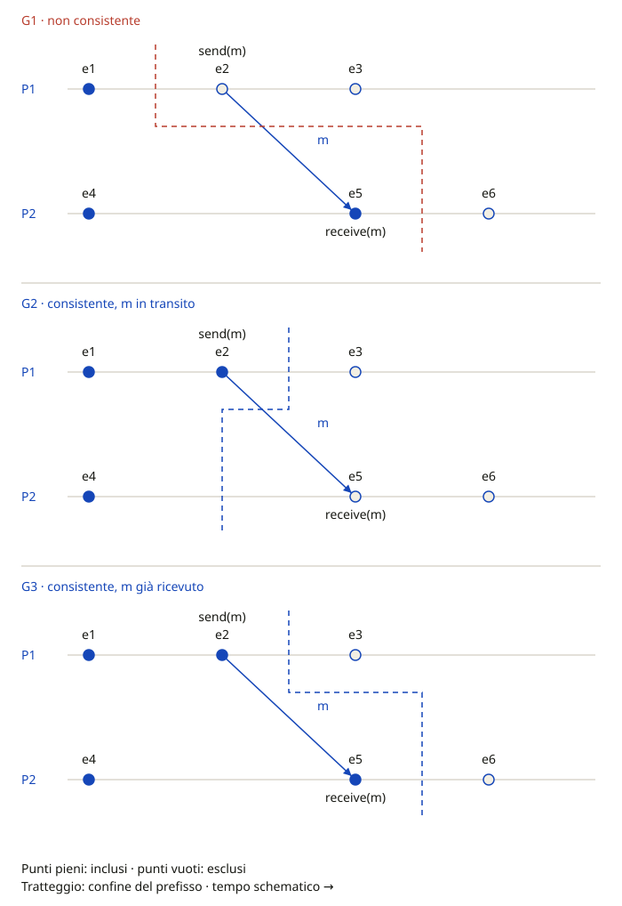
Stessi eventi e stessa freccia m nei tre pannelli. G1 = {e1,e4,e5} è inconsistente: manca l'invio e2. G2 = {e1,e2,e4} è consistente con m nel canale. G3 = {e1,e2,e4,e5} è consistente con m già ricevuto e canale vuoto. Le distanze sono schematiche, non tempi fisici; il tratteggio seleziona prefissi e non è un messaggio.
G3 mostra anche perché non bisogna richiedere che gli ultimi eventi inclusi siano tutti concorrenti: e2 → e5, eppure G3 è consistente. Uno stato così selezionato è ammissibile in una linearizzazione della storia, non necessariamente coincidente con un istante dell'interleaving osservato.
Confronto con «[module-4.2] Distributed Algorithms – An Overview», slide 26–31: la formulazione sintetica sugli stati locali non va applicata ai soli ultimi eventi del prefisso. Riferimento originale: Chandy e Lamport, Distributed Snapshots, §§2–4, per stati dei processi e dei canali e rapporto con le esecuzioni equivalenti.
Esplora tutti i 16 tagli a prefissi
Il selettore richiede JavaScript. I tre esempi nella figura restano leggibili senza script.
15. Algoritmo di Chandy-Lamport
Proposto da K. Mani Chandy e Leslie Lamport nel 1985, questo algoritmo permette di catturare uno snapshot globale consistente senza bloccare i processi, utilizzando un meccanismo a marker.
Consideriamo un singolo snapshot, processi corretti e canali diretti affidabili FIFO, senza perdita di messaggi e con consegna eventuale. La rete e la scelta degli iniziatori devono permettere ai marker di raggiungere ogni processo da includere; una rete fortemente connessa con un iniziatore è un caso sufficiente. Bianco/rosso indica se il processo ha già registrato il proprio stato.
L'algoritmo funziona cosi:
Tutti i processi sono inizialmente bianchi.
Un processo Pi decide di avviare lo snapshot: salva il proprio stato locale, diventa rosso e invia un messaggio di marker su tutti i canali in uscita prima di inviare qualsiasi altro messaggio.
Quando un processo riceve un marker su un canale j:
Se è ancora bianco, salva lo stato locale, diventa rosso e invia marker su tutti i canali uscenti. Lo stato del canale j del primo marker è vuoto.
Segna il canale j come chiuso (nessun altro messaggio bianco arrivera su quel canale, grazie a FIFO).
Dopo aver salvato il proprio stato, il processo registra i messaggi applicativi ricevuti sul canale j prima del marker su quel canale. Dopo quel marker la registrazione di j è chiusa. L'applicazione continua a ricevere e trattare i messaggi normalmente.
Il marker precede su ciascun canale tutti gli invii applicativi successivi alla registrazione del mittente. Per FIFO, il destinatario registra quindi il proprio stato prima di ricevere un messaggio post-snapshot del mittente. Questo impedisce di includere una ricezione escludendone l'invio: è la consistenza del taglio, non un requisito di concorrenza fra gli ultimi eventi inclusi.
Applicazioni degli snapshot includono: rilevamento deadlock, rilevamento terminazione, debug distribuito, checkpoint e recovery.
Ogni stato locale è quello registrato prima che quel processo diventi rosso: non esiste un unico istante fisico condiviso da tutte le registrazioni. Lo stato di un canale contiene gli invii inclusi nel taglio le cui ricezioni sono escluse. Nell'esecuzione con marker, sono i messaggi applicativi inviati prima della registrazione del mittente e ricevuti dopo quella del destinatario, prima del marker sul canale.
Gli archi continui collegano eventi dello stesso processo. Gli archi tratteggiati sono i due messaggi P → Q: m′ è inviato in e1 e ricevuto in f1; m è inviato dopo, in e2, e ricevuto dopo, in f2. La precedente figura invertiva le ricezioni e contraddiceva l’ipotesi FIFO. Questo è il programma osservato: non è una traccia dei marker, che non sono rappresentati.
L'algoritmo è usato per rilevamento di deadlock, terminazione e osservazione di predicati globali.
16. Esplora: gli stati di Chandy-Lamport
I due esploratori seguenti sono schemi dei possibili stati locali, non simulazioni dei canali. Le etichette delle transizioni indicano condizioni da soddisfare; i clic non calcolano messaggi, prefissi o completamento globale. Per esplorare davvero l'inclusione degli eventi usa il selettore dei tagli nella sezione precedente.
Idea chiave
La garanzia FIFO è per canale: gli invii precedenti al marker su quel canale arrivano prima del marker stesso. Un processo già rosso può ancora ricevere un messaggio pre-snapshot su un altro canale aperto e deve registrarlo. La chiusura di un canale non chiude gli altri.
Il completamento locale richiede di aver salvato lo stato del processo e chiuso tutti i suoi canali entranti. Non prova che tutti gli altri processi abbiano finito, né raccoglie automaticamente i loro dati. Un meccanismo di raccolta può combinare i risultati; uno snapshot da solo non arresta l'applicazione e non implementa un protocollo completo di recovery.
Attenzione
Il taglio comprende prefissi degli eventi locali. Se contiene receive(m), deve contenere anche send(m). Se contiene soltanto send(m), il messaggio appartiene allo stato del canale. Gli stati dei canali completano gli stati locali nello snapshot globale.
Il secondo esploratore segue invece il singolo processo, canale per canale:
Ogni processo ha una variabile color (red/white) e registra il proprio stato prima di diventare rosso, indipendentemente dall'istante di registrazione degli altri
Tutti i processi iniziano come white
Dopo aver registrato lo stato locale, un processo diventa red
Per registrare lo stato dei canali: un processo rosso invia un marker su tutti i canali in uscita prima di qualsiasi altro messaggio
Un processo deve diventare rosso alla ricezione di un marker se non lo ha gia fatto
17. Consensus: definizione e proprieta
Il consenso e uno dei problemi fondamentali del distributed computing: trovare un accordo tra processi distribuiti sul valore di una proprieta o su un'azione da compiere. E pervasivo nei sistemi reali: transazioni in DB (commit/abort), leader election, replicazione di state machine, atomic broadcast, clock synchronization, blockchain.
La definizione formale del problema richiede:
Ogni processo Pi parte in stato undecided e propone un valore vi.
I processi comunicano e scambiano valori.
Ogni processo alla fine fissa una decision variabledi ed entra in stato decided, senza piu poter cambiare idea.
Per l'esame
Termination: ogni processo corretto prima o poi decide. Agreement: i corretti decidono lo stesso valore. Validità: la decisione deve rispettare una condizione sulle proposte, da specificare per il modello. Irrevocabilità: una decisione non viene cambiata. La slide 37 chiama integrity la validità «se tutti i corretti propongono v, decidono v»: non è la stessa proprietà dell'irrevocabilità.
Idea chiave
Consenso, mutua esclusione ed elezione richiedono coordinamento, ma non sono lo stesso problema. La mutua esclusione assegna accessi ripetuti a una risorsa; il consenso decide un valore per istanza. Una riduzione deve precisare guasti, terminazione e proprietà richieste: la somiglianza informale non trasferisce automaticamente un teorema d'impossibilità.
Per leggere correttamente gli algoritmi seguenti, distinguiamo:
Termination: ogni processo corretto prima o poi imposta la propria variabile di decisione
Agreement: tutti i processi corretti che sono entrati nello stato decided hanno lo stesso valore (di = dj per ogni coppia di processi corretti Pi, Pj)
Validità di origine: la decisione è un valore inizialmente proposto da qualche processo, anche uno che poi crasha. È la garanzia del flooding con minimo mostrato sotto.
Validità forte sui corretti: se tutti i corretti propongono v, decidono v. È la garanzia della variante binaria phase king sotto le sue ipotesi; non segue dalla sola validità di origine.
Irrevocabilità: ogni processo decide al massimo una volta.
Risultato fondamentale: FLP
FLP (Fischer, Lynch, Paterson, 1985): nel modello completamente asincrono, con messaggi affidabili e al massimo un crash, nessun protocollo deterministico di consenso non banale può garantire la terminazione in ogni esecuzione ammissibile. Non dice che ogni esecuzione fallisce o che bisogna violare agreement: un protocollo sicuro può non terminare. Articolo originale.
Dal teorema alla pratica: consensus sotto sincronia
Gli algoritmi a round qui sotto scelgono un sistema sincrono, con limiti noti su ritardi e passi locali. Non è l'unica strada: sincronia parziale, failure detector appropriati o protocolli randomizzati modificano ipotesi o garanzie. Occorre anche specificare il modello di guasto:
Modello
Descrizione
Crash
Un processore si arresta (halt). Il guasto piu semplice da modellare
Crash+link
Un processore crasha oppure un link di rete cade e resta giu permanentemente
Omission
Un processo invia solo un sottoinsieme dei messaggi che dovrebbe inviare, o ne riceve solo un sottoinsieme
Byzantine
Un processore ha comportamento arbitrario: puo inviare messaggi contraddittori, valori falsi, o agire in modo malevolo. Il caso piu generale e difficile
18. FLP e algoritmo base con round
Il limite FLP riguarda la terminazione garantita di protocolli deterministici nel modello asincrono. Un timeout, da solo e senza ipotesi temporali, non distingue un processo lento da uno crashato.
Questo algoritmo assume N processi, canali affidabili tra ogni coppia, round sincroni e al massimo f < N guasti crash-stop. Nel round del crash un processo può inviare soltanto a parte dei destinatari; poi non invia più. I corretti ricevono entro il termine del round tutti gli invii loro destinati. Non sono ammessi omissioni permanenti dei canali o comportamenti bizantini.
Ogni processo corretto esegue f + 1 round, dove f e il numero massimo di processori che possono fallire.
In ogni round, un processo invia agli altri i valori nuovi conosciuti all'inizio del round. Attende la scadenza sincrona, non una risposta da ogni processo potenzialmente crashato, e unisce tutti gli insiemi ricevuti a V.
Dopo f + 1 round decide min(V), con lo stesso ordine totale sui valori per tutti. V è un insieme: non conserva la molteplicità delle proposte e non permette di calcolare la maggioranza dei voti.
Al più (f+1)N(N−1) messaggi point-to-point, se si invia una busta per coppia e round; omettere buste vuote può ridurre il numero effettivo. Il costo in bit dipende anche dalle dimensioni degli insiemi trasmessi.
Validità: discrepanza da non nascondere
Se P1 propone 0, lo invia e poi crasha, mentre P2 e P3 corretti propongono 1, entrambi possono ottenere V = {0,1} e decidere 0. Il minimo rispetta agreement e validità di origine, ma non la validità forte sui soli corretti della slide 37. Non basta chiamare entrambe «integrity». Il diagramma senza guasti non dimostra quella proprietà più forte.
Attenzione
L'algoritmo base funziona solo in assenza di comportamenti byzantine. Se un processo puo inviare valori arbitrari o mentire, serve un algoritmo piu robusto.
L'intuizione lento/crash spiega perché un timeout non prova un guasto in asincronia; non sostituisce la dimostrazione FLP. La garanzia esclusa è la terminazione deterministica per ogni esecuzione ammissibile. La randomizzazione può dare terminazione con probabilità 1 sotto le proprie ipotesi, non una scadenza deterministica valida per ogni sequenza di scelte casuali.
19. Byzantine fault e BGA
Qui assumiamo una rete completa sincrona, con identità del mittente riconoscibile su ogni canale e messaggi affidabili tra corretti, ma senza firme trasferibili che provino a terzi il contenuto di un messaggio. Un bizantino può inviare bit diversi a destinatari diversi o omettere invii; non può impersonare un altro mittente. I limiti dipendono da queste ipotesi, non dalla sola parola «bizantino».
Nel caso byzantine faults, i processi guasti possono avere comportamenti arbitrari: inviare valori sbagliati, contraddirsi, mentire deliberatamente. Il problema e noto come Byzantine General Agreement (BGA): generali leali (processi corretti) devono coordinarsi (decidere se attaccare o ritirarsi) nonostante la presenza di traditori (processi faulty).
Nel modello classico senza firme trasferibili, il limite è N > 3f: strettamente più di due terzi dei processi devono essere corretti. Non basta arrotondarlo a «66,7%». Con firme cambiano il modello e i risultati applicabili: occorre specificare problema e protocollo. Lamport, Shostak e Pease, 1982.
Phase king binario: due round per fase, N > 4f
La variante descritta nelle slide 41–42 richiede N > 4f, non soltanto N > 3f. Esegue f + 1 fasi, ciascuna con due round di comunicazione: in totale 2(f + 1) round. I king delle fasi sono f + 1 processi distinti, quindi almeno uno è corretto.
Round 1 — scambio: ogni corretto invia la propria preferenza binaria. Il vettore V contiene una voce per mittente, compreso il proprio voto. Omissioni o messaggi non validi valgono 0 alla scadenza. Si calcola il bit di maggioranza (0 in caso di parità) e la sua molteplicità.
Round 2 — king: il king corretto invia il proprio candidato. Ogni corretto mantiene il candidato locale se la sua molteplicità è strettamente maggiore di N/2 + f; altrimenti adotta il bit ricevuto dal king (0 se mancante o non valido). Decide soltanto dopo l'ultima fase.
Il simulatore sotto usa esplicitamente il dominio {0,1}: il default è un bit valido, non un valore «non definito» che possa diventare una decisione estranea al dominio. Non è una generalizzazione automatica a valori arbitrari. Phase king, algoritmo e prova.
Perché N > 4f: dopo l'accordo, ogni corretto vede almeno N−f copie dello stesso bit. Per mantenerlo anche con un king bizantino serve N−f > N/2+f, cioè N > 4f. Nella fase di un king corretto, se qualcuno supera la soglia per v, più di N/2 corretti hanno inviato v; anche il king lo sceglie. Se nessuno supera la soglia, tutti adottano direttamente il suo bit. L'accordo così raggiunto viene preservato nelle fasi successive.
Flusso locale di un processo corretto, non elenco dei singoli messaggi. Il primo round raccoglie le preferenze; il secondo raccoglie la proposta del king. La soglia usa la molteplicità del candidato calcolata nel primo round e include il proprio voto. Si decide soltanto dopo f + 1 fasi. Garanzia della variante: rete sincrona completa, al massimo f bizantini, N > 4f e king distinti. Valori mancanti/non validi e parità seguono il default binario 0.
Esplora scambio, soglia e king bizantino
Ogni clic esegue un round sincrono reale del modello, con messaggi bizantini prestabiliti per destinatario. Le tabelle mostrano soltanto i processi corretti; le azioni di P2 sono descritte nella traccia. Tre esecuzioni illustrano preservazione, convergenza e fallimento fuori dalle ipotesi; non sono da sole una prova generale.
Il simulatore richiede JavaScript. Diagramma e tracce statiche restano disponibili qui sotto.
N = 5: un king bizantino non rompe l’accordo
P2 è bizantino e king della seconda fase. I quattro corretti iniziano a 1, contano almeno 4 copie e mantengono 1 perché 4 > 3,5, anche quando P2 invia king-value contraddittori.
Una riga per processo corretto e fase: V è il vettore ricevuto nel primo round, poi arriva il king-value nel secondo. «Bit / copie» indica il candidato locale e la sua molteplicità; «nuovo bit» è la preferenza dopo la scelta. Le colonne di V sono P1…PN; il proprio voto è incluso. Su mobile scorri orizzontalmente.
N = 5: un king bizantino non rompe l’accordo · soglia stretta > 3.5
Fase / king
Processo
V
Bit / copie
King-value
Regola
Nuovo bit
1 / P1
P1
[1,0,1,1,1]
1 / 4
1
mantieni
1
1 / P1
P3
[1,0,1,1,1]
1 / 4
1
mantieni
1
1 / P1
P4
[1,0,1,1,1]
1 / 4
1
mantieni
1
1 / P1
P5
[1,0,1,1,1]
1 / 4
1
mantieni
1
2 / P2
P1
[1,0,1,1,1]
1 / 4
0
mantieni
1
2 / P2
P3
[1,0,1,1,1]
1 / 4
1
mantieni
1
2 / P2
P4
[1,0,1,1,1]
1 / 4
0
mantieni
1
2 / P2
P5
[1,0,1,1,1]
1 / 4
1
mantieni
1
N = 5: il king corretto risolve il disaccordo
I corretti iniziano divisi. Nessuno supera 3,5 nella prima fase: tutti adottano 0 dal king corretto P1. Nella seconda fase le quattro copie di 0 preservano l’accordo contro P2.
Una riga per processo corretto e fase: V è il vettore ricevuto nel primo round, poi arriva il king-value nel secondo. «Bit / copie» indica il candidato locale e la sua molteplicità; «nuovo bit» è la preferenza dopo la scelta. Le colonne di V sono P1…PN; il proprio voto è incluso. Su mobile scorri orizzontalmente.
N = 5: il king corretto risolve il disaccordo · soglia stretta > 3.5
Fase / king
Processo
V
Bit / copie
King-value
Regola
Nuovo bit
1 / P1
P1
[0,0,1,1,0]
0 / 3
0
adotta king
0
1 / P1
P3
[0,1,1,1,0]
1 / 3
0
adotta king
0
1 / P1
P4
[0,1,1,1,0]
1 / 3
0
adotta king
0
1 / P1
P5
[0,0,1,1,0]
0 / 3
0
adotta king
0
2 / P2
P1
[0,1,0,0,0]
0 / 4
1
mantieni
0
2 / P2
P3
[0,1,0,0,0]
0 / 4
0
mantieni
0
2 / P2
P4
[0,1,0,0,0]
0 / 4
1
mantieni
0
2 / P2
P5
[0,1,0,0,0]
0 / 4
0
mantieni
0
N = 4: controesempio fuori dalla garanzia
N = 4 soddisfa 3f+1, ma non N > 4f. Il king corretto P1 lascia tutti a 1 nella prima fase; nella seconda le sole 3 copie non superano la soglia 3. Il king bizantino P2 fa decidere 0 a P1 e 1 a P3/P4: accordo e validità forte falliscono.
Una riga per processo corretto e fase: V è il vettore ricevuto nel primo round, poi arriva il king-value nel secondo. «Bit / copie» indica il candidato locale e la sua molteplicità; «nuovo bit» è la preferenza dopo la scelta. Le colonne di V sono P1…PN; il proprio voto è incluso. Su mobile scorri orizzontalmente.
N = 4: controesempio fuori dalla garanzia · soglia stretta > 3
Fase / king
Processo
V
Bit / copie
King-value
Regola
Nuovo bit
1 / P1
P1
[1,0,1,1]
1 / 3
1
adotta king
1
1 / P1
P3
[1,0,1,1]
1 / 3
1
adotta king
1
1 / P1
P4
[1,0,1,1]
1 / 3
1
adotta king
1
2 / P2
P1
[1,0,1,1]
1 / 3
0
adotta king
0
2 / P2
P3
[1,0,1,1]
1 / 3
1
adotta king
1
2 / P2
P4
[1,0,1,1]
1 / 3
1
adotta king
1
Il diagramma seguente riguarda invece il consenso sincrono con guasti crash-stop, non il protocollo bizantino con king. Mostra una particolare esecuzione senza guasti dell'algoritmo di diffusione per f + 1 round, con f = 1. Tutti applicano la stessa regola deterministica di decisione, qui il minimo dell'insieme V.
Traccia senza guasti con valori iniziali 1, 2 e 3, entro un modello che tollera al massimo f = 1 crash. Ogni round diffonde i valori appresi agli altri processi. Le frecce seguono lo stato locale, non i singoli messaggi: dopo il primo round V = {1,2,3}; dopo il secondo tutti decidono min(V) = 1. Un caso senza guasti non costituisce da solo una dimostrazione di tolleranza ai crash.
Il problema dei generali bizantini (Lamport, Shostak, Pease, 1982) e un classico: i generali leali devono decidere all'unisono se attaccare o ritirarsi nonostante la presenza di traditori che possono inviare messaggi contraddittori a destinatari diversi, o non inviare nulla.
Per l'esame
Non confondere limite e variante: nel modello classico indicato, N ≥ 3f+1 è il limite generale; la variante phase king a due round per fase qui implementata richiede N ≥ 4f+1. Per f = 1 il primo limite dà 4 processi, ma questa variante ne richiede almeno 5. Non è una contraddizione: non ogni algoritmo raggiunge il limite ottimo.
20. Paxos, Raft e replicated state machines
Il professore accenna a due famiglie di protocolli di consenso piu avanzati, che tipicamente vengono approfonditi in corsi successivi.
Paxos (Lamport, 1998) e una famiglia di protocolli per il consenso in reti con processori non affidabili, pensata per ambienti crash-stop (non bizantini). Offre vari trade-off tra numero di processori, ritardi di messaggio, livello di attivita dei partecipanti e tipi di fallimento tollerati. Ampiamente usato per la replica di file e database dove serve durabilita.
Raft (Ongaro e Ousterhout, 2013) e un algoritmo di consenso progettato per essere facile da capire rispetto a Paxos, pur essendo equivalente in termini di fault-tolerance e performance. Offre un modo generico per distribuire una state machine su un cluster di nodi. Il sito raft.github.io contiene implementazioni open-source in Go, C++, Java e Scala.
Il consenso emerge tipicamente nel contesto delle replicated state machine: ogni server ha una state machine e un log. La state machine e il componente che vogliamo rendere fault-tolerant (es. una hash table). L'algoritmo di consenso gestisce un log replicato contenente i comandi dei client. Le state machine processano sequenze identiche di comandi, producendo cosi le stesse uscite. Se una state machine applica il comando "set x to 3" come n-esimo comando, nessun'altra state machine applichera un n-esimo comando diverso.
Schema logico, non una topologia di rete: il consenso è eseguito dai moduli distribuiti nei server. I comandi impegnati nello stesso ordine alimentano macchine a stati deterministiche. Le repliche possono avanzare a velocità diverse, ma non applicano comandi diversi nella stessa posizione.
Paxos (Lamport, 1998)
Il nome deriva dall'articolo "The Part-Time Parliament" (Lamport, 1998), che presenta il consenso come un parlamento che legifera anche quando alcuni parlamentari sono assenti. Paxos bilancia diversi aspetti: numero di processori, ritardi di messaggio prima di apprendere il valore concordato, livello di attivita dei partecipanti, numero di messaggi scambiati, e tipi di guasto tollerati. E usato in tutti i contesti dove serve durabilita, come la replicazione di file o database.
Raft (Ongaro, Ousterhout, 2013)
Raft è un protocollo di consenso progettato per essere comprensibile, con elezione del leader, replica del log e regole di sicurezza esplicite. Il nome non è un acronimo tecnico. La pubblicazione di Ongaro e Ousterhout (2014) descrive il protocollo e la sua valutazione; non ne segue un'equivalenza universale di prestazioni con tutte le varianti di Paxos.
Proposto da Leslie Lamport nel 1998. Famiglia di protocolli, non un singolo algoritmo monolitico. Considerato storicamente il riferimento per il consensus in produzione, ma notoriamente difficile da comprendere e implementare correttamente. Il nome e la metafora del parlamento riflettono la complessita della presentazione originale.
Proposto da Diego Ongaro e John Ousterhout nel 2013. Progettato esplicitamente per l'insegnamento e la comprensione. Usa un leader forte, elezione del leader con timeout randomizzati, e una struttura a log piu chiara. E lo standard de facto per nuovi progetti che necessitano di consensus.
L'algoritmo di consensus coordina il log replicato: garantisce che se una state machine applica "set x to 3" come n-esimo comando, nessun'altra state machine nello stesso cluster applichera mai un comando diverso come n-esimo. Tutte eseguono la stessa identica sequenza di comandi, producendo gli stessi risultati e arrivando agli stessi stati.
Esempio con tre server e leader stabile. Il client invia il comando al leader; AppendEntries propaga il log e l’indice di commit ai follower. Le risposte tornano al leader. Ciascun server applica soltanto le voci impegnate, in ordine. Non sono raffigurati elezione, retry e risposta al client; il quorum non è un servizio esterno.
Il sistema appare ai client come un'unica state machine affidabile, anche se una minoranza dei server nel cluster fallisce. Questo pattern e alla base di sistemi come Google File System (GFS), HDFS, RAMCloud, e innumerevoli database distribuiti.
Il risultato FLP
FLP dimostra che non esiste un algoritmo di consenso deterministico che sia contemporaneamente: tollerante a un singolo crash, funzionante in rete asincrona, e garantito terminare sempre. Almeno una di queste tre condizioni va rilassata — ed e esattamente cio che fanno Paxos e Raft con le loro assunzioni di sincronia parziale.
In Raft il flusso e guidato da un leader forte: il client invia il comando al leader, che lo replica ai follower tramite AppendEntries e conferma il commit una volta raggiunta la maggioranza.
Se un server fallisce, la macchina a stati continua a funzionare sugli altri. Questa architettura e alla base di molti sistemi fault-tolerant: GFS, HDFS, RAMCloud, Chubby, ZooKeeper, etcd.
Per l'esame
Il professore ha menzionato Paxos e Raft come "further explorations". Il risultato di FLP, le proprieta del consenso e la differenza tra crash-stop e byzantine sono argomenti chiave per l'esame.
La fama di Paxos come algoritmo difficile da comprendere ha portato allo sviluppo di Raft.
Per l'esame
La catena concettuale è: il consenso è il problema astratto, Paxos e Raft sono algoritmi concreti che lo risolvono sotto ipotesi di crash-stop, e le macchine a stati replicati sono l'architettura che usa il consenso per costruire servizi fault-tolerant. Questa gerarchia è fondamentale per comprendere i sistemi distribuiti moderni.
Verifica le tue conoscenze
Testa la tua comprensione degli algoritmi distribuiti con queste domande. Clicca su ogni domanda per vedere la risposta.
Quali sono le tre proprieta della sezione critica distribuita?
Safety: mai due processi contemporaneamente in CS. Liveness: ogni richiesta prima o poi viene concessa. Fairness: le richieste vengono servite nell'ordine della relazione happened-before.
Come fa il coordinatore nell'algoritmo centralizzato a garantire la fairness anche se le richieste arrivano in ordine diverso da quello causale?
Con vettori di richieste propagati tramite i messaggi effettivi. P0 ritarda una richiesta arrivata troppo presto rispetto alle sue dipendenze, non necessariamente una richiesta «in ritardo». Può concedere soltanto quando le dipendenze sono soddisfatte e il token è tornato a P0. Le richieste concorrenti non hanno un ordine causale reciproco obbligatorio.
Quanti messaggi servono per entrare in CS nell'algoritmo di Ricart-Agrawala?
2(N-1) messaggi: (N-1) richieste inviate a tutti gli altri processi + (N-1) OK ricevuti. Non ci sono messaggi superflui.
Nell'algoritmo di Chang-Roberts, come fa un processo a capire di essere il leader?
Quando riceve un messaggio election con ID uguale al proprio (j == myid), significa che il suo messaggio iniziale ha fatto tutto il giro dell'anello ed e tornato indietro perche nessun altro aveva un ID piu alto. A quel punto si autoproclama leader e propaga un messaggio leader.
Cosa dice il risultato FLP?
FLP esclude un protocollo deterministico che garantisca consenso non banale e terminazione in ogni esecuzione completamente asincrona con al massimo un crash, anche con messaggi affidabili. Non esclude esecuzioni che terminano né protocolli che preservano safety mentre attendono. Sincronia parziale o randomizzazione cambiano le ipotesi o la garanzia di terminazione; un semplice timeout senza ipotesi temporali non basta.
Quanti processi servono per tollerare f byzantine faults?
Dipende dal modello e dal protocollo. Nel modello sincrono classico senza firme trasferibili, il limite generale è N > 3f. Il phase king a due round per fase di questo capitolo richiede invece N > 4f. Con f = 1: almeno 4 per il limite generale, almeno 5 per questa variante.
Cos'e un consistent cut e perche e importante?
È un insieme di prefissi locali chiuso rispetto alla causalità: ogni receive(m) incluso richiede send(m) incluso, senza eccezioni. «In transito» è il caso opposto: invio incluso e ricezione esclusa. Il taglio può essere realizzato in una linearizzazione compatibile con le dipendenze; non deve coincidere con un istante fisico osservato nell'esecuzione originale.
Cosa garantiscono i canali FIFO nell'algoritmo di Chandy-Lamport?
Su ogni canale, i messaggi inviati prima del marker arrivano prima del marker; quelli successivi arrivano dopo. Ricevere un marker su un canale non esclude messaggi pre-snapshot ancora in viaggio sugli altri: questi vanno registrati finché il rispettivo canale è aperto.
Differenza tra orologio logico e vector clock?
L'orologio logico (Lamport) assegna un singolo numero a ogni evento e soddisfa: se a → b allora C(a) < C(b), ma non viceversa. Il vector clock usa un array di N contatori e soddisfa: a → b se e solo se VC(a) < VC(b), permettendo cosi di determinare con precisione se due eventi sono in relazione causale o concorrenti.
Perche il problema del consenso e considerato fondamentale nei sistemi distribuiti?
Perche molti problemi si riconducono a un problema di consenso: mutua esclusione (chi entra in CS?), leader election (chi e il leader?), atomic broadcast, transazioni distribuite, blockchain, clock synchronization. Una volta risolto il consenso, si ha uno strumento generale per risolvere un'intera classe di problemi di coordinazione distribuita.
Quali sono le tre assenze fondamentali che caratterizzano i sistemi distribuiti?
Assenza di clock condiviso (non si possono sincronizzare orologi fisici), assenza di memoria condivisa (nessun processo conosce lo stato globale), assenza di rilevamento accurato dei guasti (in un sistema asincrono non si distingue tra processo lento e processo caduto).
Nell'algoritmo di mutua esclusione centralizzato, quando una richiesta w e considerata "eligible"?
Per il richiedente i: w.v[i] == granted[i] + 1. Per ogni j ≠ i: w.v[j] ≤ granted[j]. Il coordinatore deve inoltre avere il token per concedere. granted conta i TOKEN inviati; completed conta i RELEASE ricevuti. Non usare l'uguaglianza per le componenti degli altri client.
Qual e la condizione per avere un protocollo BGA (Byzantine General Agreement) risolvibile?
Nel modello sincrono classico senza firme trasferibili serve N > 3f. È un limite generale, non la garanzia di ogni algoritmo: il phase king a due round per fase qui mostrato richiede N > 4f, quindi 5 processi per f = 1. Canali, autenticazione e proprietà di validità devono essere specificati prima di applicare un limite.
Cosa garantisce l'ordinamento causale dei messaggi rispetto al semplice FIFO?
Se send(m1) → send(m2), ogni destinatario comune deve consegnare m1 prima di m2, anche quando i mittenti sono diversi. FIFO copre soltanto una stessa coppia mittente-destinatario. L'arrivo nel buffer può avvenire fuori ordine; è la consegna applicativa a essere vincolata. Gli invii concorrenti possono restare diversamente ordinati presso destinatari diversi.
Cosa dice il teorema CAP di Brewer?
Se il modello ammette partizioni che impediscono la comunicazione, un registro distribuito non può garantire insieme linearizzabilità e completamento di ogni richiesta ricevuta da un nodo corretto in tutte le esecuzioni ammissibili. C non significa copie interne sempre identiche; A non è una percentuale di uptime né una scadenza temporale. La scelta riguarda operazioni e garanzie durante i guasti, non tre interruttori equivalenti. Esempi eseguibili con scrittura, lettura e partizione.
Qual e la differenza fondamentale tra Java RMI e un message-oriented middleware (MOM)?
RMI e basato su distributed object computing: chiamate a metodo sincrone, proxy/stub, trasparenza oggettuale, invocazione di metodi su oggetti remoti. Un MOM (es. RabbitMQ) e basato su messaggi asincroni, code, pubblicazione/sottoscrizione, disaccoppiamento temporale e spaziale. RMI e orientato agli oggetti; i MOM sono orientati ai messaggi.
Descrivi il funzionamento dell'algoritmo di Chandy-Lamport per il global snapshot.
Il primo marker, o l'iniziativa locale, fa salvare lo stato e inviare marker su ogni canale uscente prima di altri messaggi applicativi. Il canale del primo marker è registrato vuoto. Gli altri canali registrano i messaggi applicativi ricevuti dopo il salvataggio locale e prima del rispettivo marker. Quando tutti gli ingressi sono chiusi, la registrazione locale è completa; raccogliere lo snapshot globale è un passo distinto.